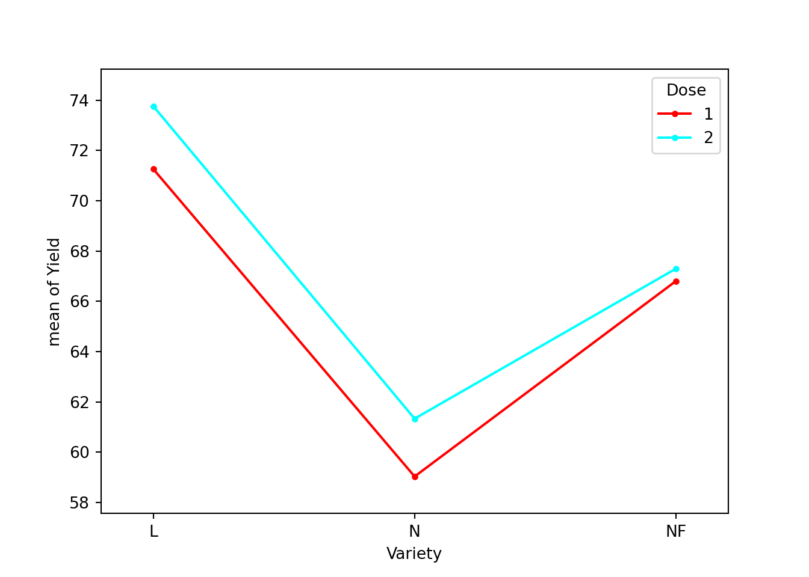

Chapitre 7 Analyse de variance (ANOVA)
Les slides associés à l’ANOVA sont disponibles ici
Le jeu de données utilisé dans ce chapitre en ANOVA à deux facteurs est disponible ici Ble.txt
7.1 Vocabulaire
On se place ici dans le cas où l’on souhaite expliquer une variable quantitative à l’aide d’une ou plusieurs variables qualitatives explicatives, appelées facteurs. Les modalités d’une variable qualitative explicative sont appelées niveaux du facteur.
Un plan d’expérience répertorie l’ensemble des combinaisons des différents facteurs considérés par l’expérimentateur. Nous donnons ici qu’un peu de vocabulaire sur les plans d’expérience pour la suite, nous n’aborderons pas la théorie de la planification expérimentale dans ce cours.
Definition 7.1 Vocabulaire issu de la planification expérimentale :
- On appelle cellule d’un plan d’expérience une case du tableau, associée à une combinaison des facteurs contrôlés.
- Un plan est dit complet s’il a au moins une observation dans chaque cellule.
- Un plan est dit répété s’il a plus d’une observation par cellule.
- Un plan est dit équilibré si chaque cellule comporte le même nombre d’observations.
- Un plan équilibré et répété est dit equirépété.
7.2 Analyse de variance à un facteur
7.2.1 Exemple et notations
On dispose d’une variable quantitative \(Y\) à expliquer et d’un seul facteur explicatif. On note
- \(i\) l’indice du niveau (ou de la “cellule”) pour le facteur explicatif,
- \(I\) le nombre de niveaux (\(i=1, \cdots, I\)),
- \(n_i\) le nombre d’expériences dans le niveau \(i\), - \(j=1,\cdots,n_i\) l’indice de l’expérience dans le niveau \(i\),
- \(n=\sum_{i=1}^I n_i\) le nombre total d’expériences.
Une expérience (ou encore un “individu”) est repérée par deux indices : le numéro de la cellule (\(i\)) et le numéro de l’observation dans la cellule (\(j\)). Ainsi on note
\[Y_{ij} = \textrm{ la valeur théorique de la réponse quantitative pour l'expérience } j \textrm{ du niveau }i\]
Dans cette section, nous allons illustrer les notions abordées avec l’exemple suivant :
On s’intéresse aux notes obtenues par des étudiants à un oral. On s’interroge sur un effet potentiel de l’examinateur sur la note obtenue.
| Examiner (i) | A | B | C |
|---|---|---|---|
| Mark \(Y_{ij}\) | 10, 11, 11 | 8, 10, 11, 12 | 10, 13, 14, 14 |
| 12,13,15 | 14, 15, 16, 16 | 15, 16, 16 | |
| Number \(n_i\) | 6 | 8 | 7 |
| Average \(Y_{i.}\) | 12 | 12.75 | 14 |
7.2.2 Modèle régulier
On modélise une variable quantitative en fonction d’un facteur à \(I\) niveaux. \(Y\) est la variable à expliquer qui prend la valeur \(Y_{ij}\) pour l’individu \(j\) du niveau \(i\) du facteur.
Le modèle s’écrit : \[\begin{equation} \left\{ \begin{array}{l} Y_{ij}=m_i+\varepsilon_{ij},\ \forall i=1, \cdots I,\ \forall j=1,\cdots, n_i \\ \\ \varepsilon_{ij} \textrm{ i.i.d } \mathcal{N}(0,\sigma^2) \end{array} \right. \tag{7.1} \end{equation}\]
Le modèle peut se réécrire sous la forme matricielle suivante :
\[Y= \left(\begin{array}{c}Y_{1,1}\\ \vdots \\ Y_{1n_1}\\Y_{21}\\ \vdots \\Y_{In_I} \end{array}\right) = \left( \begin{array}{c c c c c} 1_{n_1} & 0_{n_1} & 0_{n_1} & \cdots & 0_{n_1} \\ 0_{n_2} & 1_{n_2} & 0_{n_2} & \cdots & 0_{n_2} \\ 0_{n_3} & 0_{n_3} & 1_{n_3} & \cdots & 0_{n_3} \\ \vdots & \vdots & \vdots & \vdots & \vdots\\ 0_{n_I} & 0_{n_I} & 0_{n_I} & \cdots & 1_{n_I} \\ \end{array} \right) \left( \begin{array}{c} m_1\\ m_2\\ \vdots \\ m_I \end{array} \right) + \varepsilon\]
avec \(\varepsilon \sim \mathcal{N}_n \left(0_{n},\sigma^2 I_n\right).\)
Le modèle (7.1) est régulier (\(rg(X)=I\)). On peut donc facilement estimer les paramètres en utilisant \(\widehat{\theta}=(X'X)^{-1}X'Y\).
Proposition 7.1 Estimateur - Cas régulier
Dans la modélisation (7.1), les \(m_i\) sont estimés par \[ \widehat{m_i} = Y_{i.} : = \frac{1}{n_i}\sum_{j=1}^{n_i} Y_{ij} \] On les appelle les effets principaux des facteurs.
Les \(\widehat{m_i}\) sont indépendants et de loi respective \[ \widehat{m_i}\sim\mathcal{N}\left(m_i,\frac{\sigma^2}{n_i}\right) \]
Avec le logiciel R, il suffit d’utiliser la commande anReg<-lm(Marks~Exam -1).
On peut vérifier la matrice de design \(X\) par la commande model.matrix(Marks~Exam -1).
Call:
lm(formula = Marks ~ Exam - 1)
Residuals:
Min 1Q Median 3Q Max
-4.75 -1.00 0.00 2.00 3.25
Coefficients:
Estimate Std. Error t value Pr(>|t|)
ExamA 12.0000 0.9789 12.26 3.58e-10 ***
ExamB 12.7500 0.8478 15.04 1.23e-11 ***
ExamC 14.0000 0.9063 15.45 7.88e-12 ***
---
Signif. codes: 0 '***' 0.001 '**' 0.01 '*' 0.05 '.' 0.1 ' ' 1
Residual standard error: 2.398 on 18 degrees of freedom
Multiple R-squared: 0.9716, Adjusted R-squared: 0.9668
F-statistic: 205 on 3 and 18 DF, p-value: 4.226e-147.2.3 Modèle singulier
Pour des raisons d’interprétation, on peut s’intéresser à un changement de paramétrage. Il s’agit d’un changement de variables dans la fonction à minimiser dont les variables sont les paramètres du modèle. Soulignons que les nouvelles équations que nous allons définir ci-après correspondent toujours à celles d’un modèle à un facteur. Si on veut comparer les effets des niveaux du facteur, on peut prendre comme référence un effet moyen et examiner les écarts des effets des différents niveaux à cet effet moyen. Le modèle initial (7.1) peut s’écrire sous la forme :
\[\begin{equation} Y_{ij}= \mu + \alpha_i + \varepsilon_{ij} \tag{7.2} \end{equation}\]
où \(\mu\) est l’effet moyen et \(\alpha_i=m_i-\mu\) l’effet différentiel du niveau \(i\). Mais ce modèle est alors surparamétré (cf Chapitre 5). Pour le rendre identifiable, il faut imposer une contrainte entre les paramètres. Généralement, on considère le modèle (7.2) sous la contrainte \(\sum_{i=1}^I n_i \alpha_i=0\) (on l’appellera par la suite la contrainte “naturelle”) car elle rend le modèle orthogonal. Attention sous R, la contrainte “par défaut” est \(\alpha_1=0\).
Proposition 7.2 Les paramètres \(\mu\) et \(\alpha_i\) de la modélisation (7.2) sont estimés,
sous la contrainte “naturelle”, par : \[ \widehat{\mu}=Y_{..} := \frac{1}{n}\sum_{i=1}^{I} \sum_{j=1}^{n_i} Y_{ij} \textrm{ et } \widehat{\alpha_i}=Y_{i.} -Y_{..} \]
sous la contrainte \(\alpha_1=0\), par : \[ \widehat{\mu}=Y_{1.} \mbox{ et } \widehat{\alpha_i}=Y_{i.} -Y_{1.}, \forall i>1. \]
Exercise 7.1 Pour prouver la proposition 7.2,
pour la modélisation (7.2) sous la contrainte d’orthogonalité, vous pouvez minimiser la fonction des moindres carrés \[ h(\mu,\alpha_1,\ldots,\alpha_I) = \sum_{i=1}^I \sum_{j=1}^{n_i} (Y_{ij} - \mu - \alpha_i)^2 \] sous la contrainte \(\sum_{i=1}^I n_i\alpha_i=0\).
Pour la modélisation (7.2) sous la contrainte \(\alpha_1=0\), vous pouvez faire le lien avec la modélisation régulière et utiliser la proposition 7.1.
Ces résultats sont résumés dans notre exemple par les Figures 7.1 pour la contrainte “naturelle” (d’orthogonalité) et Figure 7.2 pour la contrainte par défaut sous R.
Figure 7.1: Schéma d’estimation dans le cas singulier de l’anova à un facteur sous la contrainte d’orthogonalité.
Figure 7.2: Schéma d’estimation dans le cas singulier de l’anova à un facteur sous la contrainte d’orthogonalité.
Sous R, on ajuste le modèle sous la contrainte \(\alpha_1=0\) toujours avec la commande lm() :
Call:
lm(formula = Notes ~ Exam, data = Data)
Residuals:
Min 1Q Median 3Q Max
-4.75 -1.00 0.00 2.00 3.25
Coefficients:
Estimate Std. Error t value Pr(>|t|)
(Intercept) 12.0000 0.9789 12.258 3.58e-10 ***
ExamB 0.7500 1.2950 0.579 0.570
ExamC 2.0000 1.3341 1.499 0.151
---
Signif. codes: 0 '***' 0.001 '**' 0.01 '*' 0.05 '.' 0.1 ' ' 1
Residual standard error: 2.398 on 18 degrees of freedom
Multiple R-squared: 0.115, Adjusted R-squared: 0.01669
F-statistic: 1.17 on 2 and 18 DF, p-value: 0.3337.2.4 Prédictions, résidus et variance
On retrouve que les valeurs ajustées et donc les résidus ne sont pas impactés par le choix de la modélisation (régulière ou singulière) et par la contrainte dans le cas singulier.
Proposition 7.3 Pour la modélisation (7.1) et la modélisation (7.2), on obtient que
- les valeurs ajustées \(\widehat{Y_{ij}}\) dans la cellule \(i\) sont constantes et sont égales à la moyenne \(Y_{i.}\) des observations dans la cellule \(i\) : \[\widehat{Y_{ij}}=Y_{i.},\]
- les résidus : \[\widehat{\varepsilon_{ij}} = Y_{ij}-\widehat{Y_{ij}}.\]
- l’estimateur de \(\sigma^2\) est donné par : \[\widehat{\sigma^2}=\frac{1}{n-I}\sum_{i=1}^I \sum_{j=1}^{n_i} (Y_{ij}-Y_{i.})^2.\]
On a les propriétés suivantes analogues à celles de la régression linéaire.
Proposition 7.4 On a les propriétés suivantes analogues à celles de la régression linéaire.
- La moyenne des résidus par cellule est nulle : \(\forall i=1,\cdots, I, \, \frac{1}{n_i} \sum_{j=1}^{n_i} \widehat{\varepsilon}_{ij}=0.\)
- La moyenne générale des résidus est nulle : \(\frac{1}{n} \sum_{i=1}^I \sum_{j=1}^{n_i} \widehat{\varepsilon}_{ij}=0\).
- La moyenne des valeurs ajustées est égale à la moyenne des valeurs observées : \(\frac{1}{n} \sum_{i=1}^I \sum_{j=1}^{n_i} \widehat{Y_{ij}}= \frac{1}{n} \sum_{i=1}^I \sum_{j=1}^{n_i} Y_{ij}\).
- \(cov(\widehat{\varepsilon},\widehat{Y})=0\).
- \(var(Y)=var(\widehat{Y})+var(\widehat{\varepsilon})\).
La dernière propriété nous amène à définir les quantités suivantes.
Definition 7.2 La variance se décompose en
\(var(\widehat{Y})\) appelée variance inter-groupe définie par \[var(\widehat{Y}) = \frac{1}{n}\sum_{i=1}^I n_i\left(Y_{i.}-Y_{..}\right)^2,\] variance des moyennes par cellule, pondérées par les poids des cellules \(n_i/n\).
\(var(\widehat{\varepsilon})\) appelée variance intra-groupe, ou variance résiduelle, définie par : \[var(\widehat{\varepsilon})=\frac{1}{n}\sum_{i=1}^I \sum_{j=1}^{n_i} (Y_{ij}-Y_{i.})^2=\frac{1}{n}\sum_{i=1}^I n_i var_i(Y)\] où \(var_i(Y)\) est la variance des valeurs observées dans le niveau \(i\) : \(\displaystyle var_i(Y)=\frac{1}{n_i}\sum_{j=1}^{n_i} (Y_{ij}-Y_{i.})^2\).
Par conséquent, \(var(\widehat{\varepsilon})\) est la moyenne des variances des observations dans les cellules.
La relation \(var(Y) = var(\widehat{Y})+var(\widehat{\varepsilon})\) s’écrit ici : \[ \textrm{ Variance totale = Variance inter + Variance intra.} \]
On définit également le coefficient \(R^2\) comme le rapport de la variance inter-groupe sur la variance totale : \[R^2=\frac{ var(\widehat{Y})}{ var(Y)} = 1 - \frac{var(\widehat{\varepsilon})}{var(Y)}.\] On l’appelle rapport de corrélation empirique entre la variable quantitative \(Y\) et le facteur considéré. C’est une mesure de liaison entre une variable quantitative et une variable qualitative. On peut mentionner les deux cas particuliers suivants :
- \(R^2=1 \leftrightarrow \widehat{\varepsilon}=0_{n} \leftrightarrow \forall j=1, \cdots, n_i, Y_{ij}=Y_{i.}\) i.e. \(Y\) est constant dans chaque cellule.
- \(R^2=0 \leftrightarrow var(\widehat{Y})=0 \leftrightarrow \forall i=1, \cdots, I,Y_{i.}=Y_{..}\), i.e. la moyenne de \(Y\) est la même dans chaque cellule.
7.2.5 Intervalle de confiance et test sur l’effet facteur
7.2.5.1 Intervalle de confiance pour les \(m_i\)
Dans le cadre général du modèle gaussien, on a montré que les estimateurs des paramètres du modèle sont distribués selon une loi gaussienne. Cette propriété peut s’appliquer au modèle à un facteur pour lequel on a posé l’hypothèse de normalité et d’indépendance des erreurs. Pour construire un intervalle de confiance pour les \(m_i\), il suffit donc de construire un intervalle de confiance de Student en utilisant que
\[\widehat{m_i}\sim \mathcal{N}(m_i,\sigma^2/n_i) ,\ \frac{(n-I)\widehat{\sigma}^2}{\sigma^2}\sim \chi^2(n-I) \textrm{ et } \widehat{m_i}\perp \!\!\! \perp\widehat{\sigma}^2\] On obtient donc \[IC_{1-\alpha}(m_i)=\left[\widehat{m_i}\pm t_{n-I,1-\alpha/2}\sqrt{\frac{\widehat{\sigma}^2}{n_i}}\ \right].\]
2.5 % 97.5 %
ExamA 9.943313 14.05669
ExamB 10.968857 14.53114
ExamC 12.095878 15.904127.2.5.2 Intervalle de confiance pour \(\mu\) et \(\alpha_i\)
Dans le cas du modèle singulier (7.2) sous la contrainte \(\alpha_1\) par défaut sous R, on obtient des intervalles de confiance pour les paramètres avec la commande confint().
2.5 % 97.5 %
(Intercept) 9.9433129 14.056687
ExamB -1.9707414 3.470741
ExamC -0.8027921 4.802792Exercise 7.2 Construisez les intervalles de confiance donnés par les commandes ci-dessous. Pour cela,
- on estime \(\mu\) par \(Y_{1.}=\hat m_1\sim\mathcal{N}(\mu,\frac{\sigma^2}{n_1})\)
- on estime \(\alpha_i\) par \(\hat m_i - \hat m_1 \sim \mathcal{N}(\alpha_i,\sigma^2(\frac{1}{n_1}+\frac{1}{n_i}))\) car \(\hat m_i\perp \!\!\! \perp\hat m_1\)
- on estime \(\sigma^2\) par \(\widehat{\sigma}^2\)
- \(\frac{(n-I)\widehat{\sigma}^2}{\sigma^2}\sim \chi^2(n-I) \textrm{ et } \widehat{\alpha}_i\perp \!\!\! \perp\widehat{\sigma}^2\)
7.2.6 Test d’effet du facteur
On peut étudier l’effet du facteur sur la variable \(Y\) en posant l’hypothèse d’égalité de tous les paramètres du modèle : \[\mathcal{H}_0 : m_1 = m_2 = \cdots = m_I = m \Longleftrightarrow \forall i=1, \cdots, I,\ \alpha_i=0\] versus \[\mathcal{H}_1 : \exists (i,i') \mbox{ tel que } m_i \neq m_{i'}.\] Sous \(\mathcal{H}_0\), tous les paramètres \(m_i\) sont égaux et le modèle s’écrit : \[Y_{ij}=m +\varepsilon_{ij} \mbox{ avec } \widehat{m} = Y_{..} = \frac{1}{n}\sum_{i=1}^I\sum_{j=1}^{n_i}Y_{ij}.\] On teste l’hypothèse d’égalité des paramètres \(m_i\) du modèle à partir de la statistique de Fisher : \[F=\frac{\displaystyle\sum_{i=1}^In_i(Y_{i.}-Y_{..})^2 / (I-1)}{\displaystyle\sum_{i=1}^I\sum_{j=1}^{n_i}(Y_{ij}-Y_{i.} )^2 / (n-I)}= \frac{SSE/ (I-1)}{SSR / (n-I)} \underset{\mathcal{H}_0}{\sim} \mathcal{F}(I-1,n-I),\] où \(SSE\) désigne la sommes des carrés inter-groupes et \(SSR\) est la somme des carrés intra-groupes. On rejette \(\mathcal{H}_0\) si \(F > f_{1-\alpha,I-1,n-I}\).
Analysis of Variance Table
Model 1: Marks ~ 1
Model 2: Marks ~ Exam - 1
Res.Df RSS Df Sum of Sq F Pr(>F)
1 20 116.95
2 18 103.50 2 13.452 1.1698 0.3337.2.7 Tableau d’analyse de la variance à un facteur
Toutes ces estimations peuvent être présentées sous la forme d’un tableau d’analyse de la variance à un facteur :
Figure 7.3: Table résumé de l’ANOVA à un facteur
7.3 Analyse de variance à deux facteurs
7.3.1 Notations et exemple
Soit \(Y\) la variable réponse quantitative que l’on veut expliquer ici par rapport à deux variables qualitatives, i.e deux facteurs. Le premier facteur (facteur ligne), dit “\(A\)”, admet \(I\) niveaux, le deuxième (facteur colonne), dit “\(B\)”, admet \(J\) niveaux. On considère le tableau croisé entre les \(I\) modalités du facteur \(A\) et les \(J\) modalités du facteur \(B\). On appelle cellule une case du tableau. Par la suite, on note : \[ \begin{array}{ll} i=1, \cdots I & \mbox{ les indices des niveaux du facteur ligne } A\\ j= 1, \cdots J & \mbox{ les indices des niveaux du facteur colonne } B \\ n_{ij } & \mbox{ le nombre d'observations pour le niveau } i \mbox{ du facteur } A \mbox{ et pour le niveau }\\ & j \mbox{ du facteur } B \mbox{ (nombre d'observations dans la cellule } (i,j))\\ \ell=1, \cdots, n_{ij} & \mbox{ les indices des observations de la cellule } (i,j)\\ Y_{ij\ell} & \mbox{ la } \ell \mbox{-ième observation dans la cellule } (i,j)\\ Y_{ij.} & \mbox{la moyenne des observations dans la cellule } (i,j) : Y_{ij.}=\frac{1}{n_{ij}}\sum_{\ell=1}^{n_{ij}}Y_{ij\ell}. \end{array} \]
On utilisera également les notations suivantes :
\[ \begin{array}{l} Y_{i..} = \frac{1}{n_{i+}} \sum_{j=1}^J \sum_{\ell=1}^{n_{ij}} Y_{ij\ell} \textrm{ avec } n_{i+} = \sum_{j=1}^J n_{ij}\\ \\ Y_{.j.} = \frac{1}{n_{+j}} \sum_{i=1}^I \sum_{\ell=1}^{n_{ij}} Y_{ij\ell} \textrm{ avec } n_{+j} = \sum_{i=1}^I n_{ij}\\ \\ Y_{...} = \frac{1}{n} \sum_{i=1}^I \sum_{j=1}^J \sum_{\ell=1}^{n_{ij}} Y_{ij\ell} \textrm{ avec } n= \sum_{i=1}^I n_{i+} =\sum_{j=1}^J n_{+j} \end{array} \]
Example 7.1 Cet exemple est issu du livre de Husson and Pagès (2013). Au cours d’une étude sur les facteurs influençant le rendement de blé, on a comparé trois variétés de blé (facteur B de modalités L, N et NF) et deux apports d’azote (facteur A apport normal, dose 1; apport intensif, dose 2). Trois répétitions pour chaque couple (variété, dose) ont été effectuées (\(n_{ij}=3\), plan équilibré) et le rendement (en q/ha) a été mesuré (\(Y_{ij\ell}\)). On s’intéresse aux différences qui pourraient exister d’une variété à l’autre, et aux interactions éventuelles des variétés avec les apports azotés.
| Variety | L (\(j=1\)) | N (\(j=2\)) | NF (\(j=3\)) |
|---|---|---|---|
| Dose 1 (\(i=1\)) | |||
| (\(Y_{1,j,k}\)) | 70.35 63.59 79.83 | 62.56 58.89 55.65 | 69.45 64.84 66.12 |
| \(n_{1j}=3\) | \(Y_{11.}=71.26\) | \(Y_{12.}=59.03\) | \(Y_{13.}=66.80\) |
| Dose 2 (\(i=2\)) | |||
| (\(Y_{2,j,k}\)) | 74.97 69.12 77.18 | 58.78 64.39 60.83 | 69.85 64.89 67.15 |
| \(n_{2j}=3\) | \(Y_{21.}=73.76\) | \(Y_{22.}=61.33\) | \(Y_{23.}=67.30\) |
Dose Variety Yield
1:9 L :6 Min. :55.65
2:9 N :6 1st Qu.:62.82
NF:6 Median :65.50
Mean :66.58
3rd Qu.:69.75
Max. :79.83 7.3.2 Modélisation
7.3.2.1 ANOVA à deux facteurs croisés
Le modèle général à deux facteurs croisés s’écrit sous la forme : \[\begin{equation} \tag{7.3} Y_{ij\ell}= m_{ij}+\varepsilon_{ij\ell} \mbox{ avec } i=1, \cdots, I, \, j = 1, \cdots, J, \, \ell=1, \cdots, n_{ij} \end{equation}\] où \(\varepsilon_{ij\ell}\sim \mathcal{N}(0,\sigma^2)\), \(n\) variables aléatoires indépendantes.
Cette paramétrisation ne permet pas de distinguer les effets de chaque facteur et de leur interaction. On considère donc la paramétrisation centrée qui décompose \(m_{ij}\) par rapport à un effet moyen général et permet de mesurer des “effets séparés” des deux facteurs et les “effets conjoints”. Le modèle complet s’écrit sous la forme : \[\begin{equation} \tag{7.4} Y_{ij\ell}=\mu +\alpha_i+\beta_j+\gamma_{ij} + \varepsilon_{ij\ell},\ i=1, \cdots, I, \, j = 1, \cdots, J, \, \ell=1, \cdots, n_{ij} \end{equation}\]
Mais on se retrouve avec un modèle défini avec \(1 + I + J + IJ\) paramètres. On doit donc introduire \(1 +I+J\) contraintes pour estimer ces paramètres. On a vu dans le chapitre 5 qu’il est intéressant de considérer des contraintes dans le cadre d’un dispositif orthogonal. Dans le cas de l’analyse de la variance à deux facteurs croisés, le dispositif orthogonal est caractérisé par la propriété suivante.
Proposition 7.5 Dans le modèle d’analyse de variance à deux facteurs croisés il existe des contraintes qui rendent la partition \(\mu, \, \alpha, \, \beta, \, \gamma\) orthogonale si et seulement si \[\begin{equation} \tag{7.5} n_{ij}=\frac{n_{i +}n_{+ j}}{n}. \end{equation}\] Dans ce cas, les contraintes (dites de type I) sont \[\begin{equation} \tag{7.6} \sum_{i=1}^I n_{i+}\alpha_i=0; \, \sum_{j=1}^J n_{+j}\beta_j=0 ; \, \forall i, \, \sum_{j=1}^J n_{ij}\gamma_{ij}=0; \, \forall j, \, \sum_{i=1}^I n_{ij}\gamma_{ij}=0. \end{equation}\]
La preuve de la proposition 7.5 est donnée en annexe B.2.
En pratique, les contraintes utilisées sont souvent celles dites de type III :
\[\sum_i \alpha_i =0, \, \sum_j \beta_j=0, \, \forall i, \, \sum_j \gamma_{ij}=0 \mbox{ et } \forall j, \, \sum_j \gamma_{ij} =0\]
Avec ce système de contraintes, il n’y a possibilité d’orthogonalité que si le modèle est équilibré, i.e. \(n_{ij}=cte\), d’après la proposition 7.5. Attention, les contraintes (7.6) ne sont pas les contraintes par défaut sous R (cf model.matrix(Yield~Dose * Variety )). Sous R, les contraintes sont \(\alpha_1=\beta_1=\gamma_{1j}=\gamma_{i1}=0\) mais on peut les modifier (cf section suivante).
Dans le cas des contraintes d’orthogonalité, les \(IJ\) paramètres \(m_{ij}\) sont donc redéfinis en fonction de
- \(\mu\) un paramètre de centrage général,
- \(\alpha_i\), \(I-1\) paramètres qui caractérisent les effets principaux du facteur \(A\),
- \(\beta_j\), \(J-1\) paramètres qui caractérisent les effets principaux du facteur \(B\),
- \(\gamma_{ij}\), \((I-1)(J-1)\) paramètres qui prennent en compte les effets d’interaction.
Dans la suite, on va se placer dans le cadre d’un dispositif orthogonal.
7.3.2.2 ANOVA à deux facteurs additifs
Le modèle d’ANOVA à deux facteurs additif est un modèle où on suppose qu’il n’y a pas d’effet d’interaction entre les deux facteurs. Le modèle s’écrit donc sous la forme \[\begin{equation} \tag{7.7} Y_{ij\ell}=\mu +\alpha_i+\beta_j + \varepsilon_{ij\ell}. \end{equation}\] Le modèle additif est un sous-modèle du modèle complet avec interaction.
Déterminez sous quelle condition il existe des contraintes rendant le modèle additif ci-dessus orthogonal.
7.3.3 Estimation des paramètres
Proposition 7.6 Dans le cadre de la paramétrisation générale \(Y_{ij\ell} = m_{ij} +\varepsilon_{ij\ell}\), \(m_{ij}\) est estimé par \[\displaystyle \widehat{m}_{ij}=\frac{1}{n_{ij}}\sum_{\ell=1}^{n_{ij}}Y_{ij\ell} =Y_{ij.} \sim \mathcal{N}\left(m_{ij},\frac{\sigma^2}{n_{ij}}\right)\]
Pour démontrer cette proposition, il suffit d’utiliser l’expression \(\widehat{\theta}=(X'X)^{-1}X'Y\) car on est ici dans le cas régulier.
Les paramètres du modèle complet d’équation (7.4) sous les contraintes d’orthogonalité (7.6) sont estimés par
\[ \left\{ \begin{array}{l} \widehat \mu = Y_{...}\\ \widehat \alpha_i = Y_{i..} - Y_{...}\\ \widehat \beta_j = Y_{.j.} - Y_{...}\\ \widehat \gamma_{ij} = Y_{ij.} - Y_{i..} - Y_{.j.}+Y_{...} \end{array} \right. \]
Pour démontrer cette proposition, il faut minimiser la fonction des moindres carrés sous les contraintes (7.6).
Proposition 7.7 Les paramètres du modèle complet d’équation (7.4) sous les contraintes par défaut sous R (\(\alpha_1=\beta_1=\gamma_{1j}=\gamma_{i1}=0,\ \forall i,\ \forall j\)) sont estimés par \[ \left\{ \begin{array}{l} \widehat \mu = Y_{11.}\\ \widehat \alpha_i = Y_{i1.} - Y_{11.}\\ \widehat \beta_j = Y_{1j.} - Y_{11.}\\ \widehat \gamma_{ij} = Y_{ij.} - Y_{i1.} - Y_{1j.}+Y_{11.} \end{array} \right. \]
Pour notre exemple, les résultats obtenus avec R sont les suivants
Call:
lm(formula = Yield ~ Dose * Variety, data = Ble)
Residuals:
Min 1Q Median 3Q Max
-7.667 -2.296 -0.325 2.623 8.573
Coefficients:
Estimate Std. Error t value Pr(>|t|)
(Intercept) 71.257 2.536 28.101 2.55e-12 ***
Dose2 2.500 3.586 0.697 0.49899
VarietyN -12.223 3.586 -3.409 0.00519 **
VarietyNF -4.453 3.586 -1.242 0.23801
Dose2:VarietyN -0.200 5.071 -0.039 0.96919
Dose2:VarietyNF -2.007 5.071 -0.396 0.69928
---
Signif. codes: 0 '***' 0.001 '**' 0.01 '*' 0.05 '.' 0.1 ' ' 1
Residual standard error: 4.392 on 12 degrees of freedom
Multiple R-squared: 0.6725, Adjusted R-squared: 0.536
F-statistic: 4.928 on 5 and 12 DF, p-value: 0.01105Il est possible de modifier les contraintes sous R. On donne ci-dessous un exemple
aov2Cbis<-lm(Yield~C(Dose,sum) + C(Variety,sum) + C(Dose,sum):C(Variety,sum),data=Ble)
#lm(Rendement ~ Dose * Variete,data=Ble,contrasts=list(Dose="contr.sum",Variete="contr.sum"))
summary(aov2Cbis)
Call:
lm(formula = Yield ~ C(Dose, sum) + C(Variety, sum) + C(Dose,
sum):C(Variety, sum), data = Ble)
Residuals:
Min 1Q Median 3Q Max
-7.667 -2.296 -0.325 2.623 8.573
Coefficients:
Estimate Std. Error t value Pr(>|t|)
(Intercept) 66.5800 1.0352 64.316 < 2e-16 ***
C(Dose, sum)1 -0.8822 1.0352 -0.852 0.410775
C(Variety, sum)1 5.9267 1.4640 4.048 0.001615 **
C(Variety, sum)2 -6.3967 1.4640 -4.369 0.000913 ***
C(Dose, sum)1:C(Variety, sum)1 -0.3678 1.4640 -0.251 0.805897
C(Dose, sum)1:C(Variety, sum)2 -0.2678 1.4640 -0.183 0.857923
---
Signif. codes: 0 '***' 0.001 '**' 0.01 '*' 0.05 '.' 0.1 ' ' 1
Residual standard error: 4.392 on 12 degrees of freedom
Multiple R-squared: 0.6725, Adjusted R-squared: 0.536
F-statistic: 4.928 on 5 and 12 DF, p-value: 0.011057.3.4 Prédiction, résidus et variance
On retrouve une fois de plus que les valeurs ajustées et donc les résidus ne sont pas impactés par le choix de la modélisation et des contraintes d’identifiabilité.
Proposition 7.8 Dans le cadre de l’ANOVA à deux facteurs avec interaction, on obtient que
- les valeurs ajustées valent
\[\widehat{Y}_{ij\ell}=\widehat{m}_{ij} = Y_{ij.}= \widehat{\mu}+\widehat{\alpha}_i+\widehat{\beta}_j+\widehat{\gamma}_{ij}\] - les résidus valent \(\widehat{\varepsilon}_{ij\ell}=Y_{ij\ell}-Y_{ij.}\)
- La variance est estimée par \[ \displaystyle \widehat{\sigma}^2 = \frac{1}{n-IJ}\sum_{ij\ell}(\widehat{\varepsilon}_{ij\ell})^2 = \frac{1}{n-IJ}\sum_{ij\ell}(Y_{ij\ell}-Y_{ij.})^2 \]
et \[ \frac{(n - IJ) \widehat{\sigma}^2}{\sigma^2}\sim \chi^2(n - IJ) \]
7.3.5 Décomposition de la variabilité
Comme dans l’analyse de variance à un facteur, la variabilité totale de \(Y\) se décompose en une variabilité inter-cellule expliquée par le modèle (notée \(SSE\)) et une variabilité intra-cellule non expliquée par le modèle (notée \(SSR\)) : \[ \underbrace{\sum_{i=1}^I \sum_{j=1}^J\sum_{\ell=1}^{n_{ij}}(Y_{ij\ell}-Y_{...})^2}_{\mbox{SST}} = \underbrace{\sum_{i=1}^I \sum_{j=1}^J n_{ij}(Y_{ij.}-Y_{...})^2}_{\mbox{SSE}} + \underbrace{\sum_{i=1}^I \sum_{j=1}^Jn_{ij}var_{ij}(Y)}_{\mbox{SSR}} \] avec \(var_{ij}(Y)=\frac{1}{n_{ij}}\sum_{\ell=1}^{n_{ij}}(Y_{ij\ell}- Y_{ij.})^2.\)
Dans le cas du modèle à deux facteurs croisés, la variance inter-cellule \(SSE\) peut être décomposée en une variance expliquée par le premier facteur, une variance expliquée par le second facteur et une variance expliquée par les interactions entre les deux facteurs. Dans le cas d’un plan orthogonal à deux facteurs, on définit les quantités suivantes :
- \(SSA\), la somme des carrés corrigés de l’effet différentiel du facteur \(A\) : \[ SSA=\sum_{i=1}^I n_{i+} (Y_{i..}-Y_{...})^2 = \sum_{i=1}^I n_{i+} (\widehat{\alpha}_i)^2 \]
- \(SSB\), la somme des carrés corrigés de l’effet différentiel du facteur \(B\) : \[ SSB= \sum_{j=1}^J n_{+j} (Y_{.j.} - Y_{...})^2 = \sum_{j=1}^J n_{+j} (\widehat{\beta}_j)^2 \]
- \(SSI\), la somme des carrés corrigés de l’effet d’interaction entre les deux facteurs : \[ SSI= \sum_{i=1}^I\sum_{j=1}^J n_{ij} (Y_{ij.} - Y_{i..} - Y_{.j.} + Y_{...})^2 = \sum_{i=1}^I\sum_{j=1}^J n_{ij} (\widehat{\gamma}_{ij})^2 \]
On peut montrer que : \[ SSE = SSA + SSB + SSI. \]
7.3.6 Le diagramme d’interactions
Le diagramme d’interactions permet de visualiser graphiquement la présence ou l’absence d’interactions. Pour chaque \(j\) fixé, on représente dans un repère orthogonal les points \((i,j)\) de coordonnées \((i, \widehat{m}_{ij}=Y_{ij.})\). Puis on trace les segments joignants les couples de points \(((i-1,j), \, (i,j))\). On obtient ainsi pour chaque \(j\) fixé une ligne brisée.
Proposition 7.9 Si l’hypothèse de non-interaction est vraie, alors les lignes brisées dans le diagramme d’interaction sont parallèles.
Proof. La ligne brisée associée au niveau \(j\) joint les points \((1,\widehat m_{1j}),(2,\hat m_{2j}),\cdots,(I,\widehat m_{Ij})\). S’il n’y a pas d’interaction, alors ces points ont pour coordonnées \((1,\widehat \alpha_1+ \widehat \beta_j),(2,\widehat \alpha_2+ \widehat \beta_j),\cdots,(I,\widehat \alpha_I+ \widehat \beta_j)\). Par conséquent, les lignes brisées associées aux niveaux \(j\) et \(j'\) se correspondent par une translation verticale d’amplitude \(\widehat \beta_j-\widehat \beta_{j'}\).
On lit sur ce graphique l’effet principal des modalités \(j\) (le niveau moyen d’une ligne brisée), l’effet principal des modalités \(i\) (la moyenne des ordonnées des points à abscisse fixée). En ce qui concerne les interactions, on obtiendra rarement des lignes brisées strictement parallèles. Le problème sera alors de savoir si leur non-parallélisme traduit une interaction significative. Un test est donc nécessaire.
Figure 7.4: Moyennes de la variable \(Y\) pour chaque niveau d’un facteur en fonction des niveaux de l’autre facteur : avec interaction à droite; sans interaction à gauche.
La Figure 7.4 illustre les comportements des moyennes des cellules de modèles avec ou sans interaction (additif). Chaque ligne est appelée un profil, et la présence d’interactions se caractérise par le croisement de ces profils tandis que le parallélisme indique l’absence d’interactions. La question est évidemment de tester si des croisements observés sont jugés significatifs.
Attention, un manque de parallélisme peut aussi être dû à la présence d’une relation non-linéaire entre la variable \(Y\) et l’un des facteurs.
Dans notre exemple, on obtient le graphique d’interaction suivant
7.3.7 Tests d’hypothèses
Trois hypothèses sont couramment considérées :
- L’hypothèse d’absence d’interactions entre les deux facteurs ou hypothèse d’additivité des 2 facteurs : \[\mathcal{H}_I: \forall i=1, \cdots, I, _, \forall j=1, \cdots, J, \, \gamma_{ij}=0.\] Cette hypothèse impose \((I-1)(J-1)\) contraintes.
- L’hypothèse d’absence d’effet du facteur \(A\) : \[\mathcal{H}_A : \forall i=1, \cdots, I, \, \alpha_i =0.\] Cette hypothèse impose \((I-1)\) contraintes.
- L’hypothèse d’absence d’effet du facteur \(B\) : \[\mathcal{H}_B : \forall j=1, \cdots, J, \, \beta_j=0.\] Cette hypothèse impose \((J-1)\) contraintes.
Une remarque très importante porte sur la démarche de ces tests d’hypothèses. S’il existe des interactions entre les deux facteurs, alors les deux facteurs qui constituent cette interaction doivent impérativement être introduits dans le modèle ; dans ce cas, il est donc inutile de tester l’effet de chacun des deux facteurs. En effet, la présence d’interactions entre les deux facteurs signifie qu’il y a un effet combiné des deux facteurs et donc un effet de chaque facteur.
7.3.7.1 Test de non-interaction entre les deux facteurs
On commence par tester l’absence d’effet d’interaction \(\mathcal{H}_I: \gamma_{ij}=0,\ \forall i=1, \cdots, I,\ \forall j=1, \cdots, J\). On est donc ramené à un test de Fisher entre les modèles suivants :
- \([M_1]\) \(Y_{ij\ell} = \mu + \alpha_i + \beta_j + \gamma_{ij} + \varepsilon_{ij\ell}\) (modèle avec interaction)
- \([M_0]\) \(Y_{ij\ell} = \mu + \alpha_i + \beta_j + \varepsilon_{ij\ell}\) (modèle additif)
La statistique de test est alors donnée par \[ F=\frac{SSI / (I-1)(J-1)}{SSR/(n-IJ) } \underset{\mathcal{H}_0}{\sim} \mathcal{F}((I-1)(J-1),n-IJ). \]
Analysis of Variance Table
Model 1: Yield ~ Variety + Dose
Model 2: Yield ~ Dose * Variety
Res.Df RSS Df Sum of Sq F Pr(>F)
1 14 235.14
2 12 231.47 2 3.6654 0.095 0.91Dans notre exemple, on retient donc le modèle additif (pas d’effet d’inetraction entre les deux facteurs).
7.3.7.2 Test d’absence d’effet du facteur \(A\)
Si on a conservé le modèle additif au test précédent, on peut tester l’absence du facteur \(A\) \[\mathcal{H}_A: \alpha_i =0,\ \forall i=1, \cdots, I\]
Le test de Fisher compare donc les modèles suivants - \([M_1]\) \(Y_{ij\ell} = \mu + \alpha_i + \beta_j + \varepsilon_{ij\ell}\) (modèle additif)
- \([M_0]\) \(Y_{ij\ell} = \mu + \beta_j + \varepsilon_{ij\ell}\) (Anova à un facteur)
La statistique de test est donnée par \[F=\frac{SSA/(I-1)}{SSRAB/(n-(I+J-1))} \underset{\mathcal{H}_0}{\sim} \mathcal{F}(I-1,n-(I+J-1)),\] où \(SSRAB\) est le SSR du modèle additif.
Analysis of Variance Table
Model 1: Yield ~ Variety
Model 2: Yield ~ Variety + Dose
Res.Df RSS Df Sum of Sq F Pr(>F)
1 15 249.15
2 14 235.14 1 14.01 0.8341 0.3765Dans notre exemple, on peut conclure qu’il n’y a pas d’effet de la dose.
7.3.8 Test d’absence d’effet du facteur \(B\)
Si on a conservé le modèle additif au test précédent, on peut tester l’absence du facteur \[\mathcal{H}_B: \beta_j =0,\ \forall j=1, \cdots, J\]
Le test de Fisher compare donc les modèles suivants
\([M_1]\) \(Y_{ij\ell} = \mu + \alpha_i + \beta_j + \varepsilon_{ij\ell}\) (modèle additif)
\([M_0]\) \(Y_{ij\ell} = \mu + \alpha_i +\varepsilon_{ij\ell}\) (ANOVA à un facteur)
La statistique de test est donnée par \[F=\frac{SSB/(J-1)}{SSRAB/(n-(I+J-1))} \underset{\mathcal{H}_0}{\sim} \mathcal{F}(J-1,n-(I+J-1)),\]
où \(SSRAB\) est le SSR du modèle additif.
Analysis of Variance Table
Model 1: Yield ~ Dose
Model 2: Yield ~ Variety + Dose
Res.Df RSS Df Sum of Sq F Pr(>F)
1 16 692.72
2 14 235.14 2 457.58 13.622 0.0005192 ***
---
Signif. codes: 0 '***' 0.001 '**' 0.01 '*' 0.05 '.' 0.1 ' ' 1On retient dans notre exemple qu’il y a un effet de la variété sur le rendement.
7.3.9 Tableau d’analyse de variance à deux facteurs croisés dans le cas d’un plan orthogonal
Dans le cas du modèle à deux facteurs croisés avec dispositif orthogonal, on rappelle que la variabilité totale peut être décomposée en
\[
SST = SSE + SSR = SSA + SSB + SSI + SSR.
\]
On peut ainsi dresser le tableau d’analyse de variance d’un plan orthogonal à deux facteurs croisés :
Figure 7.5: Table résumé de l’ANOVA à deux facteurs
7.4 En résumé
- Savoir écrire un modèle d’ANOVA à un et deux facteurs (individuellement et matriciellement), régulier et singulier
- Savoir distinguer un modèle régulier d’un modèle singulier
- Savoir estimer les paramètres du modèle d’ANOVA dans le cas régulier et dans le cas singulier (en s’adaptant à la / les contrainte(s) choisie(s))
- Savoir construire un intervalle de confiance pour un paramètre du modèle d’ANOVA
- Savoir construire un test pour tester l’effet d’un facteur, l’effet d’interaction entre facteurs, … et savoir organiser ces différents tests
- Savoir interpréter un diagramme d’interaction
- Savoir manipuler SSA, SSB, SSI, SSE, SSR dans le cas d’un plan orthogonal.
7.5 Quelques codes en python
Dans cette partie, on donne quelques lignes de codes en python pour reproduire (partiellement) l’étude faite précédemment en R.
7.5.1 Exemple d’ANOVA à un facteur
import statsmodels.api as sm
from statsmodels.formula.api import ols
# Ajustement du modèle ANOVA 1 régulier
anRegpy = ols('Marks ~ Exam-1', data=Datapy).fit();
anRegpy.summary()
# Ajustement du modèle ANOVA 1 singulier<class 'statsmodels.iolib.summary.Summary'>
"""
OLS Regression Results
==============================================================================
Dep. Variable: Marks R-squared: 0.115
Model: OLS Adj. R-squared: 0.017
Method: Least Squares F-statistic: 1.170
Date: Jeu, 28 oct 2021 Prob (F-statistic): 0.333
Time: 12:20:14 Log-Likelihood: -46.546
No. Observations: 21 AIC: 99.09
Df Residuals: 18 BIC: 102.2
Df Model: 2
Covariance Type: nonrobust
==============================================================================
coef std err t P>|t| [0.025 0.975]
------------------------------------------------------------------------------
Exam[A] 12.0000 0.979 12.258 0.000 9.943 14.057
Exam[B] 12.7500 0.848 15.039 0.000 10.969 14.531
Exam[C] 14.0000 0.906 15.447 0.000 12.096 15.904
==============================================================================
Omnibus: 0.750 Durbin-Watson: 1.388
Prob(Omnibus): 0.687 Jarque-Bera (JB): 0.773
Skew: -0.356 Prob(JB): 0.679
Kurtosis: 2.386 Cond. No. 1.15
==============================================================================
Notes:
[1] Standard Errors assume that the covariance matrix of the errors is correctly specified.
"""<class 'statsmodels.iolib.summary.Summary'>
"""
OLS Regression Results
==============================================================================
Dep. Variable: Marks R-squared: 0.115
Model: OLS Adj. R-squared: 0.017
Method: Least Squares F-statistic: 1.170
Date: Jeu, 28 oct 2021 Prob (F-statistic): 0.333
Time: 12:20:14 Log-Likelihood: -46.546
No. Observations: 21 AIC: 99.09
Df Residuals: 18 BIC: 102.2
Df Model: 2
Covariance Type: nonrobust
==============================================================================
coef std err t P>|t| [0.025 0.975]
------------------------------------------------------------------------------
Intercept 12.0000 0.979 12.258 0.000 9.943 14.057
Exam[T.B] 0.7500 1.295 0.579 0.570 -1.971 3.471
Exam[T.C] 2.0000 1.334 1.499 0.151 -0.803 4.803
==============================================================================
Omnibus: 0.750 Durbin-Watson: 1.388
Prob(Omnibus): 0.687 Jarque-Bera (JB): 0.773
Skew: -0.356 Prob(JB): 0.679
Kurtosis: 2.386 Cond. No. 4.00
==============================================================================
Notes:
[1] Standard Errors assume that the covariance matrix of the errors is correctly specified.
""" 0 1
Exam[A] 9.943313 14.056687
Exam[B] 10.968857 14.531143
Exam[C] 12.095878 15.904122 0 1
Intercept 9.943313 14.056687
Exam[T.B] -1.970741 3.470741
Exam[T.C] -0.802792 4.802792# Test d'effet de l'examinateur
from statsmodels.stats.anova import anova_lm
anmequalpy = ols('Marks ~1', data=Datapy).fit();
anova_lm(anmequalpy,anRegpy) df_resid ssr df_diff ss_diff F Pr(>F)
0 20.0 116.952381 0.0 NaN NaN NaN
1 18.0 103.500000 2.0 13.452381 1.169772 0.3329527.5.2 Exemple d’ANOVA à deux facteurs
import statsmodels.api as sm
from statsmodels.formula.api import ols
# Récuperation des données
Blepy=r.Ble
Blepy['Dose']=Blepy['Dose'].astype(str)
Blepy['Variety']=Blepy['Variety'].astype(str)
# Ajustement du modèle avec interaction
anov2Singpy = ols('Yield ~ Dose * Variety', data=Blepy).fit();
anov2Singpy.summary()<class 'statsmodels.iolib.summary.Summary'>
"""
OLS Regression Results
==============================================================================
Dep. Variable: Yield R-squared: 0.672
Model: OLS Adj. R-squared: 0.536
Method: Least Squares F-statistic: 4.928
Date: Jeu, 28 oct 2021 Prob (F-statistic): 0.0111
Time: 12:20:17 Log-Likelihood: -48.528
No. Observations: 18 AIC: 109.1
Df Residuals: 12 BIC: 114.4
Df Model: 5
Covariance Type: nonrobust
===========================================================================================
coef std err t P>|t| [0.025 0.975]
-------------------------------------------------------------------------------------------
Intercept 71.2567 2.536 28.101 0.000 65.732 76.781
Dose[T.2] 2.5000 3.586 0.697 0.499 -5.313 10.313
Variety[T.N] -12.2233 3.586 -3.409 0.005 -20.037 -4.410
Variety[T.NF] -4.4533 3.586 -1.242 0.238 -12.267 3.360
Dose[T.2]:Variety[T.N] -0.2000 5.071 -0.039 0.969 -11.250 10.850
Dose[T.2]:Variety[T.NF] -2.0067 5.071 -0.396 0.699 -13.056 9.043
==============================================================================
Omnibus: 1.202 Durbin-Watson: 2.764
Prob(Omnibus): 0.548 Jarque-Bera (JB): 0.199
Skew: 0.182 Prob(JB): 0.905
Kurtosis: 3.365 Cond. No. 9.77
==============================================================================
Notes:
[1] Standard Errors assume that the covariance matrix of the errors is correctly specified.
"""
/Users/maugis/opt/anaconda3/envs/r-reticulate/lib/python3.6/site-packages/scipy/stats/stats.py:1604: UserWarning: kurtosistest only valid for n>=20 ... continuing anyway, n=18
"anyway, n=%i" % int(n))from statsmodels.graphics.factorplots import interaction_plot
from matplotlib import pyplot as plt
# graphique d'interaction
interaction_plot(Blepy['Variety'],Blepy['Dose'],Blepy['Yield']);
plt.show()
from statsmodels.stats.anova import anova_lm
# Test d'absence d'interaction
anov2addpy = ols('Yield~Dose + Variety', data=Blepy).fit()
anovaResults = anova_lm(anov2addpy,anov2Singpy)
print(anovaResults) df_resid ssr df_diff ss_diff F Pr(>F)
0 14.0 235.137778 0.0 NaN NaN NaN
1 12.0 231.472400 2.0 3.665378 0.09501 0.910041# Test d'absence de l'effet Dose
anovApy = ols('Yield~Variety', data=Blepy).fit()
print(anova_lm(anovApy,anov2addpy)) df_resid ssr df_diff ss_diff F Pr(>F)
0 15.0 249.147467 0.0 NaN NaN NaN
1 14.0 235.137778 1.0 14.009689 0.834131 0.376541# Test d'absence d'effet Variété
anovBpy = ols('Yield~Dose', data=Blepy).fit()
print(anova_lm(anovBpy,anov2addpy)) df_resid ssr df_diff ss_diff F Pr(>F)
0 16.0 692.719511 0.0 NaN NaN NaN
1 14.0 235.137778 2.0 457.581733 13.622108 0.000519References
Husson, François, and Jérôme Pagès. 2013. Statistiques Générales Pour Utilisateurs: 2, Exercices et Corrigés. Presses universitaires de Rennes.